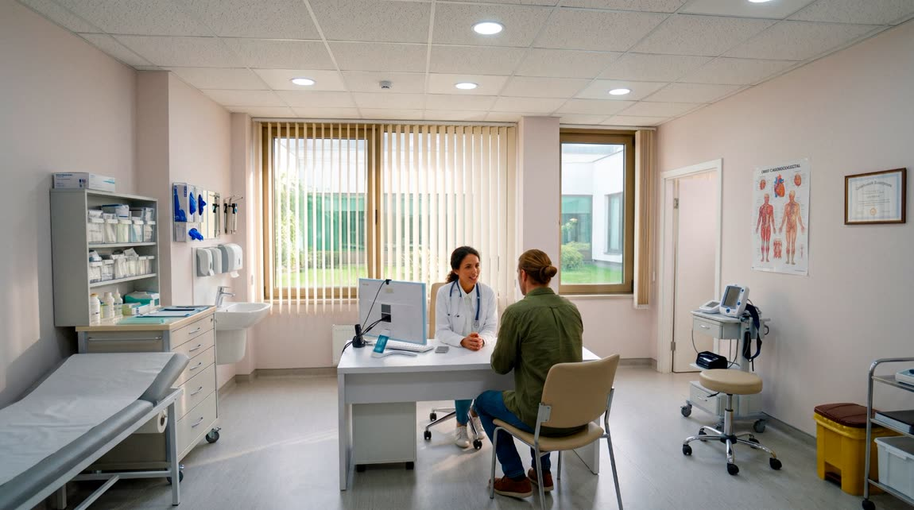

Teleparecer
Parecer por escrito, assíncrono, com resposta dentro do SLA contratado.
AssíncronoA Auris conecta instituições de saúde a especialistas por meio de uma plataforma flexível, com SLA contratado, pagamento por uso e acompanhamento da operação.
Hospitais e operadoras enfrentam as mesmas barreiras quando precisam de especialistas com agilidade, custo previsível e escala.
Modelos engessados e burocráticos, difíceis de ajustar à demanda real.
Sem prazo garantido, cada caso vira uma negociação.
Ampliar a cobertura exige novos contratos e longos processos.
Orçar acesso especializado é um exercício de adivinhação.
Pouca visibilidade sobre uso, desempenho e qualidade do serviço.

Contrate um plano
O plano mensal da instituição vira créditos — os AuriCoins — válidos para toda a rede.
Use conforme a necessidade
Os créditos acessam qualquer serviço especializado, no formato que o caso exigir.
Acompanhe a operação
Consumo, SLA e indicadores acompanhados pelo dashboard, em tempo real.
Zero burocracia. Máxima flexibilidade. Total previsibilidade.
Do parecer assíncrono à visita presencial, a instituição usa a mesma rede — no formato que o caso exige.
Parecer por escrito, assíncrono, com resposta dentro do SLA contratado.
AssíncronoConsulta ao vivo por vídeo, ideal para orientações rápidas.
SíncronoDiscussão entre médicos sobre um caso específico.
SíncronoAnálise aprofundada de casos complexos por especialistas.
AssíncronoReunião com vários especialistas para decisões de caso.
SíncronoEspecialista disponível para múltiplos atendimentos no período.
CoberturaAtendimento in loco quando o caso exige presença física.
PresencialEstamos desenvolvendo uma nova forma de conectar hospitais e operadoras a especialistas médicos, com flexibilidade, previsibilidade e acompanhamento operacional.